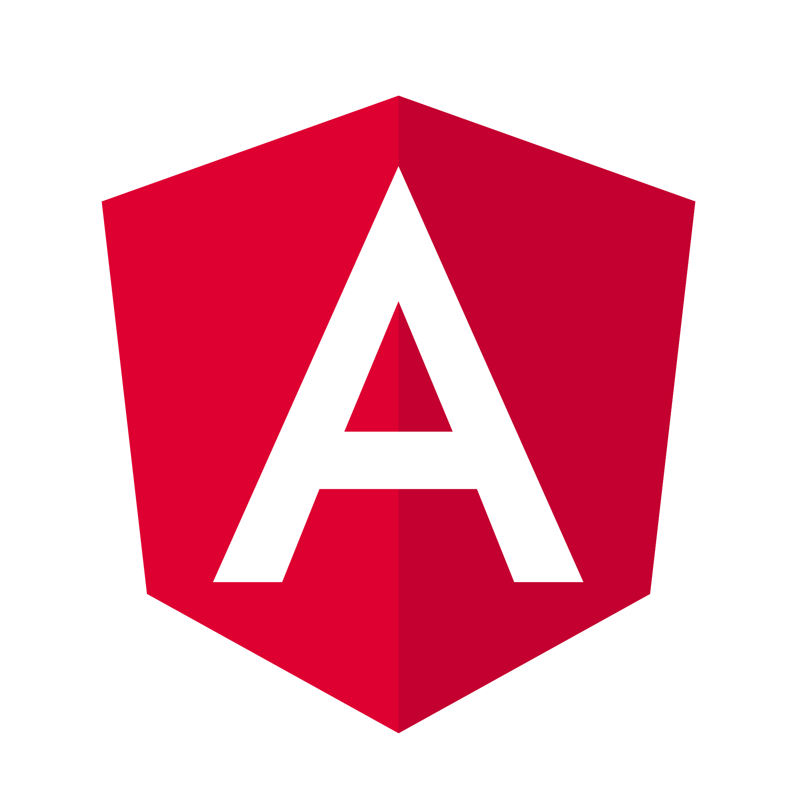
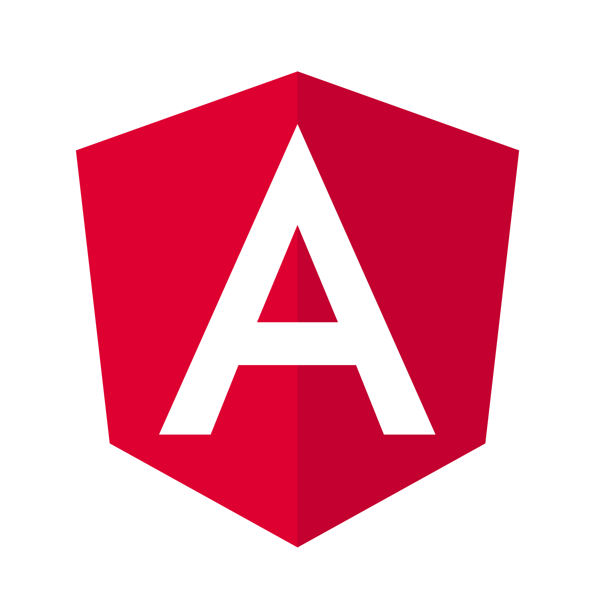
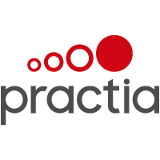
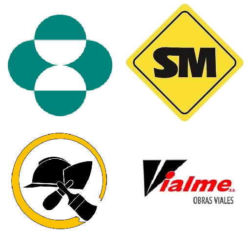
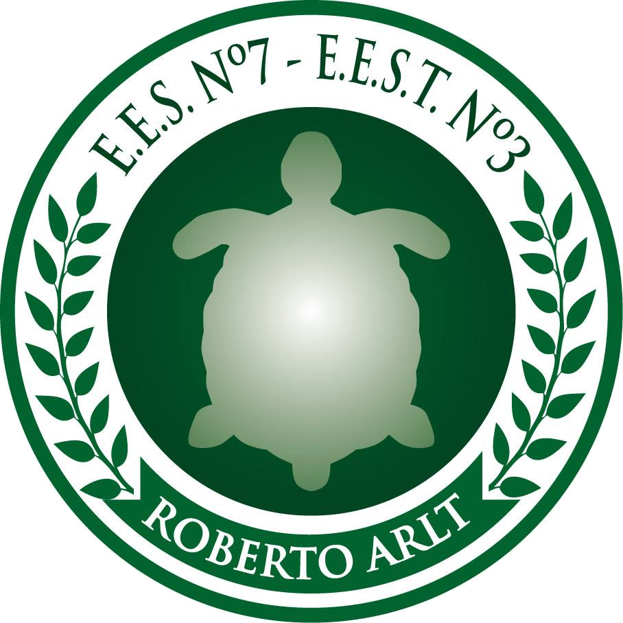

-
¡Hola, mundo!
Soy Javier Agustín Larroca, egresado de la Tecnicatura Universitaria en Programación de la Universidad Tecnológica Nacional.
Desde 2021 me desempeño como desarrollador fullstack, especializado en backend con C# .NET, bases de datos relacionales mediante SQL y desarrollo de interfaces web utilizando Angular.
Además, soy docente de Programación en la UTN, Facultad Regional General Pacheco. Comencé como ayudante mientras aún era estudiante, y esa experiencia me llevó a descubrir una nueva pasión: la docencia.
Me considero una persona comprometida con el aprendizaje continuo y con la adopción de buenas prácticas en el desarrollo de software, siempre buscando crecer tanto en lo técnico como en lo humano en cada desafío que enfrento.
Lenguajes
 

Experiencia

-
UTN - FRGP
Docente de Programación I / Ayudante de Programación III
Docente en la Tecnicatura Universitaria en Programación, impartiendo contenidos de programación estructurada mediante diagramas de flujo y C++. Temas abordados: ciclos exactos e inexactos, estructuras condicionales, vectores, matrices, funciones y metodologías algorítmicas. Uso activo del Campus Virtual Moodle.
Desde: 03/2021 - Hasta: Actualidad
-
Advertmind
Desarrollador de software en I+D
Desarrollo de aplicaciones web y de escritorio utilizando C# .NET, Angular con TypeScript, SQL Server, y control de versiones con SVN. Trabajo bajo metodologías ágiles (Scrum).
Formé parte del departamento de I+D, participando activamente en la mejora continua del producto mediante el desarrollo de nuevas funcionalidades, resolución de incidencias y adaptaciones a nuevos requerimientos de clientes.
Desde: 05/2023 - Hasta: 05/2025
-
Recursiva
Desarrollador de software Full Stack
Desarrollo de aplicaciones web utilizando TypeScript, C# y SQL Server con frameworks como .NET y Angular.
Participé en el desarrollo desde cero del portal web para GDM Seeds, adaptado a medida para sus clientes, abarcando desde el backend hasta la interfaz de usuario.
Desde: 02/2022 - Hasta: 04/2023
- 
-
Practia Global
Desarrollador de software Full Stack
Desarrollo de aplicaciones web con TypeScript, C# y SQL Server, utilizando .NET Core con Entity Framework y Angular para el frontend.
Trabajé en el proyecto Y-Rupe para Y-Tec, abordando el modelado de base de datos, desarrollo de API y construcción de interfaces con plantillas provistas por el cliente.
Desde: 07/2021 - Hasta: 02/2022
- 
-
MSD Argentina, Smith Molina, Vectatio, Vialme
Administrativo
Desde mediados de 2016, inicié como pasante realizando tareas administrativas en talleres, luego en compras y logística. Fui encargado de compras y también administrativo de logística, monitoreando la cadena de frío en la distribución local.
Desde: 05/2016 - Hasta: 07/2021
Estudios
-

UTN - BA
Licenciatura en Tecnología Educativa
Desde: 08/2025 - Hasta: 12/2026
-

UTN - FRGP
Tecnicatura Universitaria en Programación
Desde: 02/2020 - Hasta: 12/2021
-

E.E.S.T.Nº 3
Tecnicatura personal y profesional en informática
Desde: 03/2010 - Hasta: 12/2016
Certificados
Web API .Net Core
Educación IT
Aptitudes: Desarrollo de APIs RESTful · Manejo de .NET Core · Serialización de datos y consumo de servicios · Seguridad en APIs · Testing de endpoints · Principios SOLID y buenas prácticas
Finalizado: 08/2025
Aportes para la construcción colectiva de la perspectiva de accesibilidad
Universidad Tecnológica Nacional
Aptitudes: Perspectiva de accesibilidad · Sensibilidad y empatía social · Inclusión laboral y educativa · Diseño universal · Trabajo colaborativo
Finalizado: 10/2024

Micaela TEC - Ciencia y tecnología hacia la igualdad
Universidad Tecnológica Nacional
Aptitudes: Perspectiva de género en ciencia y tecnología · Sensibilización en violencia de género · Compromiso con la igualdad
Finalizado: 06/2024
BackEnd .Net Immesion
MindHub LA
Aptitudes: Programación Backend en .NET · Entity Framework y acceso a datos · Angular · Control de versiones con GIT
Finalizado: 08/2021
Proyectos


ABM Tarjetas
Proyecto realizado íntegramente como práctica. Alta, baja y modificación de tarjetas con conexión a base de datos.
Lenguajes: Angular, .NET y SQL
Turnero para Clínica
Asignación de turnos a pacientes vinculándolos según especialidad y médico seleccionado. Control de usuario con diferentes roles.
Lenguajes: C#, .NET y SQL

Carrito Web
Listado de productos, cargados desde base de datos SQL, agregados al carrito de compras mediante sesión de navegador.
Lenguajes: C#, .NET y SQL


Sistema de stock
Sistema para control de stock de productos con alta, baja, modificación y listado de productos, categorías y marcas. Utilizando Programación orientada a objetos, con conexión a base de datos.
Lenguajes: C#, .NET y SQL
LARA
Sistema de control de usuarios y entrenamientos ideado para ser utilizado en un gimnasio. El mismo cuenta con alta, baja, modificación y listado de usuario y entrenamientos
Lenguajes: C++ y C
Generala
Juego generala de dos jugadores. Con cálculo de puntajes y turnos para cada jugador. Contiene interfaz gráfica y programación orientada a objetos.